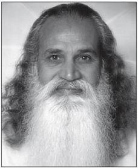
Book Four has the heading Kaivalya Pāda, or the portion that talks about absoluteness. The root of kaivalya is kevala, which means without qualities or conditions, that which is cosmic. The one who has the quality of kevala is called kaivalya. It’s an experience of absoluteness, unlimitedness.
Note on Books Three and Four:
I have translated all the sūtras of Books Three and Four; however, I have chosen not to comment on them all. I have taken the ones I have found most useful for the understanding of Yoga aspirants and have left out the others. Those readers who wish to study more about the sūtras that have no commentaries here can consult one of the books on the Yoga Sūtras listed in the Selected Reading.
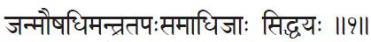
1. Janmauṣadhi mantra tapḥ samādhijāḥ siddhayḥ.
Janma = birth; auṣadhi = herbs;
mantra = sacred speech, Vedic hymn, incantation;
tapḥ = consume or destroy by heat, purification by austerity, undergo penance, acceptance of sufferings;
samādhi = concentration of thoughts, intense contemplation on a particular object, absorption; jāḥ = born, produced or caused by;
siddhayḥ = psychic powers, accomplishments, attainments.
Siddhis are born of practices performed in previous births, or by herbs, mantra repetition, asceticism or by samādhi.
Patañjali begins this book by reviewing the methods by which the siddhis can be obtained by the Yoga practitioner. Some people attain the siddhis without even doing any practices in this life. They don’t know what they did to have these kinds of powers. That is the proof that they have done something in their past lives to merit such powers in this one. He also gives us some clues about the people who get some experiences through their LSD and marijuana. The so-called “grass” is an herb, is it not? Mushrooms could be considered herbs also.
Or siddhis come by the practice of mantra japa or by asceticism. Asceticism, or tapas, means accepting suffering willingly, thus exercising your will power and gaining control over the mind.
And finally Patañjali says that the siddhis can come through samādhi gained through the proper procedure of concentration and meditation.
So, there are various ways of accomplishing the psychic powers. But normally it is recognized that all the others except samādhi are not natural. For example, using herbs means inducing siddhis by the use of certain external stimuli. It’s not an “organic” siddhi. It may come and then fade away. So, siddhis should come in the regular process of Yoga, not through external stimuli.
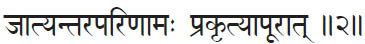
2. Jātyantarapariṇāmḥ prakṛtyāpūrāt.
Jati = species, class by birth, category;
antara = another, different;
pariṇāmḥ = transformation; prakṛiti = nature;
āpūrāt = from inflow, from overflow, from flooding.
The transformation of one species into another is brought about by the inflow of Nature.
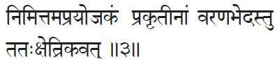
3. Nimittam aprayojakam prakṛtīnām varaṇabhedastu tatḥ kṣetrikavat.
Nimittam = incidental cause, instrumental or efficient cause;
aprayojakam = not causing, not initiating;
prakṛtīnām = natural evolution, primary material cause;
varaṇa = choosing, mound, obstacle;
bhedḥ = piercing, separation, bursting open, blossoming, sprouting, breaking through;
tu = but; tatḥ = thence, from that;
kṣetrikavat = like a farmer.
Incidental events do not directly cause natural evolution; they just remove the obstacles as a farmer [removes the obstacles in the water course running to the field].
Here, Patañjali gives a nice example of how a farmer allows the water to run into the field simply by removing the obstacles in the water course. Your mind also wants to run to its original source of tranquility, but there are impediments on the way that obstruct the flow.
Your practices and your teacher do the job of an agriculturist. The guru is not really bringing you anything new; instead, he or she is simply removing the obstacles so the flow of consciousness will be continuous and the water can reach its source. Water is already running in the canal. The cultivator simply goes looking for some obstacles and takes them out. Once the cultivator removes them, he or she doesn’t need to tell the water it can flow. It is like the sun outside; it is always there, ready to come into your house. The obstacles are the closed door and windows. If you simply open them, the light shines in.
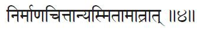
4. Nirmāṇacittānyasmitāmātrāt.
Nirmāṇa = created, produced, constructed; cittāni = minds;
asmitā = ego sense, I-ness; mātrāt = due to only, from aloneness.
A Yogi’s ego sense alone is the cause of [other] artificially created minds.
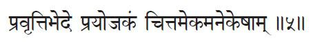
5. Pravṛttibhede prayojakam cittamekamanekeṣām.
Pravṛtti = functions, activities, appearance, manifestation;
bhede = on difference, in the division;
prayojakam = director, instigator;
cittam = mind, mind-stuff;
ekam = one; anekeṣām = of the many.
Although the functions in the many created minds may differ, the original mind-stuff of the Yogi is the director of them all.
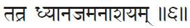
6. Tatra dhyānajam anāśayaṁ.
Tatra = of these; dhyāna = meditation; jam = born;
anāśayam = free of karmic impressions, without residue.
Only the minds born of meditation are free from karmic impressions.
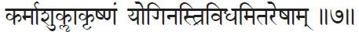
7. Karmāśuklākṛṣṇam yoginastrividhamitareṣām.
Karma = action; aśukla = not white (not good);
akṛṣṇam = not black (not bad); Yoginḥ = of a Yogi;
trividham = three kinds; itareṣām = of others.
The actions of the Yogi are neither white [good] nor black [bad]; but the actions of others are of three kinds: good, bad and mixed.
The esoteric meaning of white and black is good and bad, or pure and impure. But in the Yogi’s case there is no pure or impure karma. As a Yogi, your actions are performed with such equanimity that you don’t bring them into either category. You are above good and bad. Others may categorize your actions; but to you they are just something that has to be done and they are happening.
It is like the case of any instrument—a knife, for example. A knife just cuts. If the knife cuts a fruit you may say it is good and if it cuts a throat it is bad. But to the knife, a cut is a cut. It doesn’t matter where it cuts or what it cuts. The one who wields the knife might face the good and bad reactions. Like that, the Yogi is not an agent for his or her actions. The Yogi is above the dualities. For a normal person, however, actions are of three kinds: good, bad and a mixture of the two. Part of an act may be good, part bad. For example, you may do something beautiful but your motive may be a little selfish. The act is good but the motive is bad. It’s good for others but not for you. So you can see the difference between a Yogi’s karma and the karma of others. Others say, “Oh, this is good; I did it perfectly,” or “Oh, I goofed,” or “This is just so-so.” But with a Yogi, you can’t categorize it that way.
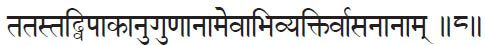
8. Tatastadvipākānuguṇānāmevābhivyaktirvāsanānām.
Tatḥ = of these; tad = their; vipāka = fruition;
anuguṇānām = following favorable conditions, corresponding to gunas;
eva = only, alone; abhivyaktiḥ = manifestation;
vāsanānām = subconscious impressions, latent potentials.
Of these [actions], only those vasanas (subconscious impressions) for which there are favorable conditions for producing their fruits will manifest in a particular birth.
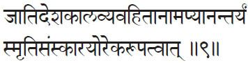
9. Jāti deśa kāla vyavahitānām apyānantaryam smṛti saṁskārayorekarūpatvāt.
Jāti = class or species born into, incarnation;
deśa = space, place; kāla = time; vyavahitānām = separated;
api = although, even; ānantaryam = uninterrupted relationship;
smṛti = of memory;
saṁskāra = of impression, of subliminal activator;
(oḥ = dual ending, of both) ekarūpatvāt = identical, from oneness.
Although desires are separated from their fulfillments by class, space and time, they have an uninterrupted relationship because the impressions [of desires] and memories of them are identical.
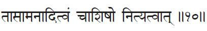
10. Tāsāmanāditvam cāśiṣo nityatvāt.
Tāsām = of these, belonging to these [impressions];
anāditvam = beginninglessness;
ca = and; āśiṣḥ (āśiṣo) = desire to live;
nityatvāt = from eternality.
Since the desire to live is eternal, impressions are also beginningless.
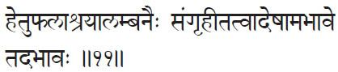
11. Hetu phalāśrayālambanaiḥ saṁgṛhītatvādeṣāmabhāve tadabhāvḥ.
Hetu = cause; phala = effect, fruit;
aśraya = basis, substratum;
alambanaiḥ = by (plural for all four) support;
saṁgṛhītatvāt = from the state of being held together, from interconnectedness;
eṣām = of these; abhāve = upon the disappearance;
tad = they; abhāvḥ = disappear.
The impressions being held together by cause, effect, basis and support, they disappear with the disappearance of these four.
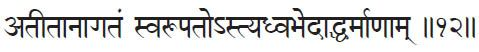
12. Atītānāgatam svarūpato’styadhvabhedāddharmāṇām.
Atīta = past, gone by; anāgatam = future, not yet come;
svarūpatḥ = in its own form; asti = it exists;
adhva = conditions, course, orbit, path;
bhedāt = from the difference;
dharmāṇām = of characteristics.
The past and future exist in the real form of objects which manifest due to differences in the conditions of their characteristics.
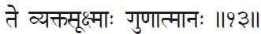
13. Te vyaktasūkṣmāḥ guṇātmānḥ.
Te = they [the characteristics]; vyakta = manifest;
sūkṣmāḥ = subtle; guṇa = primal force, primary attributes: sattvas, rajas, tamas; ātmānḥ = having nature (of).
Whether manifested or subtle, these characteristics belong to the nature of the guṇas.
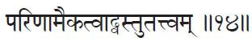
14. Pariṇāmaikatvādvastutattvam.
Pariṇāma = transformation, alteration;
ekatvāt = due to oneness, from uniformity;
vastu = thing, real object; tattvam = that-ness, reality.
The reality of things is due to the uniformity of the guṇas’ transformations.
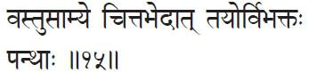
15. Vastusāmye citta bhedāt tayorvibhaktḥ panthāḥ.
Vastu = thing, real object; sāmye = on being the same;
citta = minds; bhedāt = from the differences;
tayoḥ = of these two; vibhaktḥ = different, separation;
panthāḥ = way, path.
Due to differences in various minds, perception of even the same object may vary.
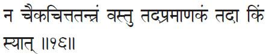
16. Na caika citta tantram vastu tad apramāṇakam tadā kim syāt?
Na = not; ca = and; eka = one, single; citta = mind;
tantram = dependent, underlying principle; vastu = object;
tad = that; apramāṇakam = not perceived; tadā = then;
kim = what?; syāt = perhaps, perchance, might be.
Nor does an object’s existence depend upon a single mind, for if it did, what would become of that object when that mind did not perceive it?
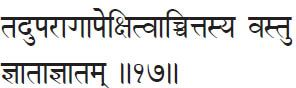
17. Taduparāgāpekṣitvāccittasya vastu jñātājñātaṁ.
Tad = that, thereby, thus; uparāga = coloring, influence;
apekṣitvāt = from or due to need; cittasya = of the mind;
vastu = object; jñāta = known; ajñātam = unknown.
An object is known or unknown dependent on whether or not the mind gets colored by it.
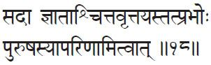
18. Sadā jñātāścittavṛttayastatprabhoḥ puruṣasyāpariṇāmitvāt.
Sadā = always; jñātāḥ = known;
citta = mind, mind-stuff, mind-field;
vṛttayḥ = modification, changes; tat = that;
Prabhoḥ = of the master, of the excelling, of the consistency, of the eternality; Puruṣasya = of the pure consciousness;
apariṇāmitvāt = from or due to changelessness.
Due to Its changelessness, changes in the mind-stuff are always known to the Puruṣa, who is its master.
Here, Patañjali speaks of the changes in the mind-stuff. The citta changes constantly because that is its natural tendency. Mind is a part of the ever-changing nature. However clever we are, we can only keep the mind quiet for a little while. Therefore, our aim is not to keep the mind peaceful but to rise above the mind and realize the ever-peaceful Self.
Puruṣa is the owner of the mind-stuff or, as Patañjali puts it, its master. The Puruṣa knows all the changes that happen in it. How could Puruṣa know them if it is also changing? A changing thing cannot recognize the changes in something else, like an insane person cannot recognize the insanity of another person. So Puruṣa, being changeless, can always recognize the changing nature of the mind.
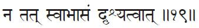
19. Na tat svābāsam dṛśyatvāt.
Na = not; tat = that [mind]; svābhāsam = self-luminous;
dṛśyatvāt = because of its perceptibility, from its ability to see.
The mind-stuff is not self-luminous because it is an object of perception by the Puruṣa
Here we see more or less the same idea. The mind-stuff is not the subject. It is the object to the one subject who is the Puruṣa. The mental functions are what you, as Puruṣa, perceive. The perceived can never become the perceiver, nor vice-versa. If a perceiver is perceived by something, then he or she is no longer a perceiver but, rather, the perceived. To really have this awareness, this isolation of perceiver and perceived, is Yoga.
It seems easy. So why don’t we always have it? Because the quality of the mind is not that clear. It still drags us down. It does not allow us to stay separated from the mind. Māyā (illusion) tricks us.
You know that yesterday you had an experience on the mental level and it didn’t bring you lasting satisfaction. You may say, “I don’t like it anymore and I don’t want it. This is the last time I will run after that.” Then, two days later you want the same thing again. What does it mean? At a certain point, the true wisdom comes up, but then again māyā tricks you. “Oh, yesterday it brought pain, but today it’s going to be wonderful. Come on.”
That is because there is still the ego, which is the mind’s basis. It really doesn’t allow you to know and be who you are. That’s why, even though you are the Puruṣa, you don’t experience that always. When you hurt somebody else you say, “Oh, I didn’t do it; it was only my mind.” When somebody hurts you, you should feel the same way. “Well, you didn’t hurt me, your mind did it, so I can’t be angry with you.”
When we do it we put the blame on the mind. When somebody else does it, we usually say, “How dare you do that?” In savāsana (the Hatha Yoga Corpse Pose) you may say, “I’m not the body; the body is just lying here.” But when you get up, if somebody says, “Oh, how plump you are!” you get disturbed. “How dare you?” The person didn’t call you chubby, but called your body chubby.
The realization doesn’t stay with us for long. We should try to retain that awareness always. It will slip; but bring it back again and again and again. That is spiritual practice.
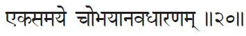
20. Ekasamaye cobhayānavadhāraṇaṁ.
Eka = one; samaye = in time [in one time—simultaneous];
ca = and; ubhaya = both;
anavadhāraṇam = not perceived, not cognized.
The mind-stuff cannot perceive both subject and object simultaneously [which proves it is not self-luminous].
The mind-stuff perceives objects outside. At other times, if it is clean enough, it can turn within and reflect the Puruṣa also. So, it can be either subject or object. As subject, it sees other things. As an object, it is seen by the Puruṣa. But the Puruṣa can never be both. It is always the subject.
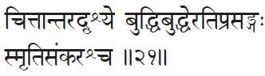
21. Cittāntara dṛśye buddhibuddheratiprasaṅgḥ smṛtisaṁkaraśca.
Citta = mind; antara = another; dṛśye = on the seeable;
buddhi = perceiver; buddheḥ = from perception;
atiprasaṅgḥ = endless, ad infinitum; smṛti = memory;
saṁkarḥ = confusion; ca = and.
If the perception of one mind by another mind be postulated, we would have to assume an endless number of them and the result would be confusion of memory.
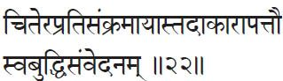
22. Citerapratisaṁkramāyāstadākārāpattau svabuddhisaṁvedanam.
Citeḥ = of the consciousness;
apratisaṁkramāyāḥ = of [that which] absolutely stays put, of the strictly unmoving, of the unchangeable; tad = that [citta];
ākāra = appearance, outward sign, expression;
apattau = upon assuming, upon arising, in the reflection;
sva =one’s own; buddhi = intelligence (mind);
saṁvedanam = becomes conscious, known.
The consciousness of the Puruṣa is unchangeable; by getting the reflection of it, the mind-stuff becomes conscious of the Self.
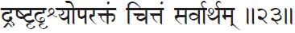
23. Draṣṭṛ dṛśyoparaktam cittam sarvārtham.
Draṣṭṛ = Seer; dṛśya = seen, visible;
uparaktam = colored, dyed;
cittam = mind-field, mind-stuff;
sarva = all, every; artham = object, thing.
The mind-stuff, when colored by both Seer and seen, understands everything.
24. Tad asaṁkhyeyavāsanābhiścittamapi parārtham saṁhatyakāritvāt.
Tad = that; asaṁkhyeya = countless;
vāsanābhiḥ = latent potentials, subliminal traits linked to past desires;
cittam = mind-field; api = even, also;
para = another [the Puruṣa];
artham = for the sake, purpose;
saṁhatya = in association, keeping together, combined, forming one mass or body;
kāritvāt = from (due to) activation.
Though having countless desires, the mind-stuff exists for the sake of another [the Puruṣa] because it can act only in association with It.
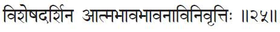
25. Viśeṣadarśina ātmabhāva bhāvanā vinivṛttiḥ.
Viśeṣa = distinction;
darśinḥ = of the one who sees;
Ātma = Self;
bhāva = turning into, becoming [mind becoming Self], existing as;
bhāvanā = idea, imagining, projection;
vinivṛttiḥ = ceases forever.
To one who sees the distinction between the mind and the Ātman, thoughts of mind as the Ātman cease forever.
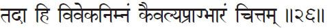
26. Tadā hi vivekanimnam kaivalya prāgbhāram cittam.
Tadā = then; hi = indeed, further;
viveka = discrimination, discernment;
nimnam = inclines toward, slopes to;
kaivalya = absoluteness, independence;
prāk (prāg) = directed towards, inclined, promote;
bhāram = heavy mass, weight, gravitate;
cittam = mind-field.
Then the mind-stuff is inclined toward discrimination and gravitates toward Absoluteness.
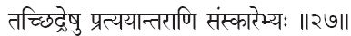
27. Tacchidreṣu pratyayāntarāṇi saṁskārebhyḥ.
Tad (Tac) = those; chidreṣu = in-between, in the gaps;
pratyaya = content of the mind, notion, thought;
antarāṇi = others, other ones;
saṁskārebhyḥ = from past impressions.
In-between, distracting thoughts may arise due to past impressions.
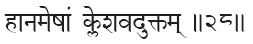
28. Hānameṣām kleśavaduktaṁ.
Hānam = removal, relinquishing, getting rid of;
eṣām = their [the old impressions];
kleśavat = as the obstacles, just like the afflictions (kleśa);
uktam = (were) described, explained, discussed.
They can be removed, as in the case of the obstacles explained before. [See Book Two, sūtras 1, 2, 10, 11 and 26.]
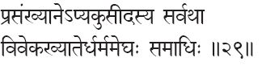
29. Prasaṁkhyāne’pyakusīdasya sarvathā viveka khyāterdharmameghḥ samādhiḥ.
Prasaṁkhāne = in the attainment of the highest reward, in perfect discrimination; api = even;
akusīdasya = totally disinterested, without self interest, non usury, non usuriously; sarvathā = constant, in every way, in all ways;
viveka = discrimination, discernment; khyāteḥ = of clear cognition;
dharma = virtue, morality, customary observance, according to the nature;
meghḥ = cloud; samādhiḥ = deep meditation, absorption
One who, due to his or her perfect discrimination, is totally disinterested even in the highest rewards, remains in the constant discriminative discernment, which is called dharmamegha (cloud of dharma) samādhi. [Note: The meaning of dharma includes virtue, justice, law, duty, morality, religion, religious merit and steadfast decree.]
Here, Patañjali talks about a samādhi called dharmamegha samādhi—the cloud of dharma samādhi. Dharmamegha means that all the beautiful qualities are there. One gets into that state when even the desire to be high is gone. Why? Because who desires to get high? Is it the one who is already high? No. As long as the desire to get high is there, you are not high; and when you really get high the desire fades away. You will have attained what is to be attained, and all the desires drop out of you. It is only then that you are totally liberated.
Saint Thirūmular says, “Even with God, please be without desire.” That means that desire itself is a bondage. Ultimately, even the desire to get God should go. Then only will you have God. When will that desire go? When you get God! It’s kind of a tricky thing. The fulfillment of this desire and becoming desireless happen simultaneously. It’s something like saying, “I want to sleep, I want to sleep.” At one point you fall asleep. Only when “I want to sleep” goes, you are asleep.
So, this dharmamegha samādhi cannot be attained by your effort. Although you put all your efforts up to a certain point, when you really reach that place, even that effort goes away and it becomes effortless. At that point, further effort would keep you down.
Until we reach this stage, there is no harm in having certain good wants to help us stay away from the so-called undesirable wants. Then, when you are able to eliminate the undesirable ones, it is easy to eliminate the good ones also.
It’s exactly like the example of using soap to clean a cloth. Imagine you have a pure, clean, white cloth, and then somehow it becomes dirty. You want the cloth to stay away from “wanting” the dirt. What do you do? You want a piece of soap. What is soap? Another piece of dirt, is it not? Maybe it’s good-looking and good-smelling and you have to pay for it, but it’s still dirt. Once you get the soap, what do you do? You bring the paid-for dirt and allow it to chum up with the unpaid-for dirt. At the proper time, when you know positively that all the unwanted dirt is really playing with the newcomer dirt, you just rinse the cloth in clean water and take it out. What happens? Both kinds of dirt are washed away.
In the same way, you have to have a good want to push away the old bad ones. When the old wants are ready to go, the good want will go also. “Okay, my purpose is over; I leave you free.” If, instead, you are pushing an undesirable want away with the help of another undesirable want, it may help in ridding you of the first one, but the second will remain with you. To give an example, even our government is making this mistake in its approach to curing heroin addiction. They prescribe methadone to push away the heroin. It works, but what remains? Methadone addiction. Then you will need something else to push out this addiction. It becomes a vicious cycle.
Another example has occurred many times in history when a government tries to rid itself of some unwanted group with the help of another unwanted group. At one point, the Muslims wanted to take control over a part of India. They sought the help of the British. The British came and helped the Muslims subdue the Indians, but once the Muslims were victorious, the English said, “Having made you successful, you will have to give us some royalty. Otherwise, we will push you out.” Who is the real ruler then? The Muslims thought that by getting the help of the English they could put down the Indians and get everything; instead, they were stuck under the thumb of the English.
Therefore, whether it is in the daily life or the national life, before we seek the help of something, we should know whether it is the right kind of help or not. Otherwise, it may bind us later on.
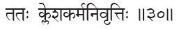
30. Tatḥ kleśa karma nivṛttiḥ.
Tatḥ = from that; kleśa = root affliction;
karma = resulting action; nivṛttiḥ = cessation, retreat, finished, vanish.
From that samādhi all afflictions and karmas cease.
By dharmamegha samādhi, all that affects the mind goes away. One becomes a jīvanmukta. Such a person is not affected by anything. He or she is there and things happen; that person is a constant witness. The body and mind, which were trained well before liberation, just continue certain functions because of their prārabda, or residual karma.
To review the workings of karma, all our actions are grouped into three sections. As you know, all karmas that are performed leave their results. Those results are stored in a big “bag” called the karmasaya, literally, the bag of karma.
Prārabda karma is the allotment taken out of the bag to be experienced in this life. You have lived before in a number of different bodies and have performed a lot of actions. The results are now bundled up in the karmasaya. Sañjīta karma is the sum total of all your past karmas. Prārabda is the amount allotted for you to experience in this lifetime. It is according to your prārabda that you come into this world with different qualities of body and mind. If you are a girl and I am a boy, it means your prārabda gave you a feminine body and mine gave me a masculine one, because we each have to undergo certain experiences for which that type of body is needed.
That is why sometimes we see bodies with certain deformities. There’s no other reason for a newborn child to be deformed. It has done some karma to get a body in which the soul should suffer this result.
While experiencing the prārabda we are doing new karma also. How can we distinguish between the prārabda and the āgami, or new karma? Anything that happens without your expectation, unforeseen, is due to prārabda. But anything that you consciously plan and do is your new karma. If you purposely go and kick a stone and hurt your toe, it is āgami karma. If you are just walking around and all of a sudden hit a stone and get hurt, that is due to prārabda. So these are the three kinds of karmas: sañjīta, prārabda and āgami.
In the case of jīvanmuktas, they have come into the world with human bodies because of their prārabda. Until they got liberated they were just like anybody else. Now, with their Self-knowledge, they decide not to do any new karma to bind themselves, so there is no āgami for them. But that doesn’t mean they are not doing any actions. Some things seem to be happening. They seem to be doing many things. But they are not. And because of this isolation from the mind and body, they are not affected by the reactions of the acts you see them perform. It is the mind that performs all the karmas.
When you realize you are the Puruṣa, you know that any karma belongs to the mind. When that isolation, or kaivalya, comes, the sanjita gets burned because there is no stimulation for the body and mind to continue anything. And because the sañjīta cannot affect you, there is no further birth for you. But still, the prārabda that brought this mind and body remains. Until that is over, the body and mind will still function.
Jīvanmuktas are neither to be blamed nor praised for their actions. Just as you watch them acting, they watch themselves. All the praise and blame go to the body and mind—not to the jīvanmuktas.
Sometimes students ask what happens to the jīvanmuktas after they die. Do they come back, or do they go to another plane and continue evolving or what happens? They never worry about it. They don’t even want to know. If they wanted to know, they would not be jīvanmuktas. They are free.
You might wonder then about the saints and prophets who appear in our midst sometimes. They may have come back because they had that desire; then they are not jīvanmuktas. Or, sometimes, jīvanmuktas are sent back into the world. It is not because they want it, but because the cosmic law wants it. “Hey, you are a good example. Go, live in the midst of people. Let them see you appear to be acting, although you are not acting.” Sometimes teachers are sent like that.
Sri Ramakrishna Paramahamsa gives a beautiful parable about this. Once, a few people went to visit a garden, having been told that there were beautiful big fruit trees there. But the garden was completely surrounded by high walls, and they couldn’t even see what was inside. With great effort one person managed to climb the wall and see inside. He saw such luscious fruit that the minute he saw it, he jumped in. Another person climbed up and immediately jumped in the same way. Finally, a third person climbed up, but when she saw it, she said, “My gosh, how can I jump in now? There are so many hungry people below who don’t know what is here or how to climb up.” So, she sat on the wall and said, “Hey, there are a lot of fruits, come on. If you try hard, you can come up like I have.” She lent a hand, pulling people in.
Such people are called teachers. They know what is there, but they don’t just want to go and experience it themselves. They want to wait and pull as many people over as they have the strength to do. It is the cosmic consciousness or cosmic law that takes care of that. Sometimes, even if such a person wants to jump over the wall, God says, “No; you stay there. It’s not your business to jump. Sit there and help everybody. Until you finish, you can’t jump in.” They simply have to obey the cosmic law.
And how can you recognize a jīvanmukta? Only by becoming a jīvanmukta. Until then, he or she may appear to you to be like anybody else. Still, we seem to recognize it in some people. We just see something, and if we think the person is a jīvanmukta, we may follow him or her. But we should know that we are understanding that person in our own way, according to our own imagination. That’s the problem with gods and religion. Each person imagines the unimaginable God in his or her own way, and each imagination varies; so, we fight. But, in the case of wanting a realized person to guide you, ultimately you have to judge by the results. What happens in your life by following the imagination that so-and-so is a jīvanmukta? If you become more unhappy, don’t follow that person anymore. If you are becoming better and happier, continue. The proof of the pudding is in eating. Lick a little and see how it tastes. If it tastes good, eat a little more. It’s an important point. Why are my students with me? What have they seen in me? Are they all seeing the same thing? Have any of them really seen me ? Do they really know who I am? No. According to their own thinking they have taken a liking to me. “Oh, this guy seems to be a good person to guide me.” That’s all. It’s their own imagination. They imagine a guru should be a certain way. If he or she fits all their expectations, they say, “This is the one I am looking for.” In reality, only a snake knows a snake; only a saint knows a saint.
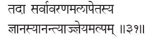
31. Tadā sarvāvaraṇamalāpetasya jñānasyānantyājjñeyamalpam.
Tadā = then; sarva = all; avaraṇa = coverings;
mala = impurity, imperfection, dirt;
apetasya = of that removal; jñānasya = of knowledge;
anantyāt = from (because of) the infinity (endlessness);
jñeyam = to be known; alpam = very little, nearly nothing, trifling.
Then all the coverings and impurities of knowledge are totally removed. Because of the infinity of this knowledge, what remains to be known is almost nothing.
What is impurity? It is like the sensitive coating on photographic film. The “I” and “mine” coat our mental film and then want to “catch” everything they see. If not for the sensitive film, you may see many things, but they wouldn’t affect you, because nothing would get recorded. A jīvanmukta’s mind is like an uncoated, crystal-clear mica sheet. It runs through the camera and pictures are shot, but nothing gets recorded. There’s nothing to process, nothing to develop and nothing to fix. That means there are no “fixations.”
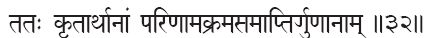
32. Tataḥ kṛtārthānām pariṇāmakramasamāptirguṇānām.
Tataḥ = then; kṛta = having fulfilled, done;
arthānām = purposes (of);
pariṇāma = transformation, transition;
krama = sequence, succession; samāptiḥ = terminate, end;
guṇānām = of the primal attributes (all three—sattvas, rajas and tamas).
Then the guṇas terminate their sequence of transformations because they have fulfilled their purpose.
This is a beautiful sūtra to understand. The three guṇas (sattva, rajas and tamas) constantly intermingle; and, thus, Prakṛti functions. Why should they do this; or, in other words, why does nature function? The nature functions to give experience to the reflected Puruṣa. (In other words, the mind. The scriptures sometimes say Puruṣa itself, but the meaning is the Puruṣa reflected upon the mind-stuff.”)
Unfortunately, the Prakṛti, of which our mental mirror is made, is itself made up of the three guṇas, so it is not always the same. It’s a sort of psychedelic mirror. Occasionally it is straight, but most of the time it moves around. If you stand in front of it, you see yourself as constantly changing. You forget the truth, because you see it so rarely; whereas, the ugly image is almost constant. You mistake yourself to be the changing images and say, “Oh, I am terribly ugly; I am terribly unhappy; I am terribly this or that.” You put yourself in the position of the image. So, the duty of Prakṛti is to torture the soul in every way until it really gets enough knocks and bumps.
Then, at one point, the soul says, “No; I cannot be affected by all this. I should stay away.” When this understanding comes, the soul renounces the world. “I don’t want you anymore, because the minute I come you simply put me into difficult situations. You never allow me to be quiet. Now and then you give me a little happiness, but you seem to be bringing me mostly unhappiness.” That is what is called sannyāsa, or renunciation. “I don’t want.”
Why do people come to my talks? Because they don’t want to be in the nightclubs; they don’t want Miami Beach; they don’t want Las Vegas. The very fact they want to be at the talks means they don’t want the other things out there. Why? They’ve had enough. As the previous sūtra says, when the soul detaches itself, there’s no more impurity for it.
And then what happens to Prakṛti? I will give an analogy to explain it. Imagine a mama with a number of children. They all go out to play and get dirty. When they return, totally covered with grime, she puts them into the bathtub and turns on the shower. Of course, she can’t clean everybody at the same time, so she washes them one by one. Once a baby is clean, what will she do with it? She takes it out of the tub and says, “Go, get dry and hop into bed.” Will she stop working? No. There are still more dirty children in the tub. Mother Prakṛti is just like that. She stops functioning with the clean child.
“Okay, you are clean. Go, and don’t come to me again. My job is over with you. But I still have a lot of work to do with other children.” That is what is meant in this sūtra. Prakṛti—the qualities and their continuous transformations—stop their action on the free soul because they have fulfilled their purpose. They have given enough experience to the Puruṣa.
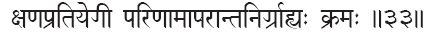
33. Kṣaṇapratiyogī pariṇāmāparāntanirgrāhyaḥ kramaḥ.
Kṣaṇa = moments; pratiyogī = dependent existence, partnership, uninterrupted succession;
pariṇāma = transformation, transition;
aparānta = other end, final end;
nirgrāhyaḥ = graspable, recognizable;
kramaḥ = sequence.
The sequence [referred to above] means an uninterrupted succession of moments which can be recognized at the end of their transformations.
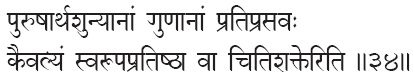
34. Puruṣārthaśūnyānām guṇānām pratiprasavaḥ kaivalyam svarūpa pratiṣṭhā vā citiśakter iti.
Puruṣa = Self, pure consciousness; artha = purpose, meaning;
(Puruṣārtha = the four purposes of the human: artha, kāma, dharma and mokṣa);
śūnyānām = devoid of, loss of existence, of being zero;
guṇānām = of the primal attributes (sattvas, etc.);
pratiprasavaḥ = reabsorb, involution, recede, return back in reverse;
kaivalyam = absolute freedom, independence;
svarūpa = its own nature, own form;
pratiṣṭhā = settles, established; vā = or;
citi = pure consciousness; śakteḥ = of its power;
iti = thus, the end.
Thus, the supreme state of Independence manifests while the guṇas reabsorb themselves into Prakṛti, having no more purpose to serve the Puruṣa. Or [to look from another angle] the power of pure consciousness settles in its own pure nature.
Patañjali does not mean here that the guṇas and Prakṛti are really different. But we use the term Prakṛti when the guṇas are not manifesting separately. When the guṇas manifest, Prakṛti functions with the Puruṣa. Once that job is over, the guṇas withdraw their action from that Puruṣa. Or you can put it another way: “The power of pure consciousness settles in its own pure nature.” That means that when the guṇas withdraw, finishing their job, the Puruṣa—having gotten completely cleaned—stops running around. It is settled. It is happy in its own true nature. It is no longer seeking happiness and peace from outside because it realizes it is happiness personified.
Now, if we go all the way back to the very beginning of the Yoga Sūtras, the second sūtra in the first Book says, “Yogas’ citta vṛtti nirodhaḥ.” “Restraint of the modifications of the mind-stuff is Yoga.” The third sūtra is “Tadādraṣtuḥ svarupe’vasthanam.” “Then the Seer rests in its own state.” The entire four books are the explanations of these two sūtras. Citta vṛtti nirodhaḥ is the practice. Svarupevasthānam is the experience. That’s why he again talks about the experience at the end. “You just rest in your own true nature. You have played your games, you have gotten all your experiences and now you are resting.” By resting, Patañjali means that the true you is resting while your body and mind function.
It’s not that your body and mind necessarily rest always. They have to continue to fulfill the jobs for which they were created. According to the prārabda, a momentum has been created like a wheel that has been set in motion. You gave a push earlier and the body and mind are facing that now as prārabda. When you attain the jīvanmukta state, the pushing hand is taken away, but the wheel won’t stop immediately. It will continue until the momentum is lost. While the momentum continues, you just rest and watch what is happening as a witness. It’s like an old grandpa watching the children but not being affected by them.
In one sense, you are the witness; in another, you are the actor. It depends on where you put yourself. In reality, you are the witness, but if you miss the reality, you are the actor. When you become the actor you are responsible for your actions. When you are the witness you are not responsible for your actions because you are not acting. So, either act and be responsible, or allow the mind and body to act and be a witness, totally free.
If the body and mind do something wrong, they will undergo certain sufferings. If my mind wants to push my finger into the fire, I am watching. My mind is pushing my finger into the fire. But because I am watching and not doing anything, that doesn’t mean the finger won’t get burned or that the mind won’t feel the agony of it. When the mind cries, “It got hurt,” I must still watch that. The finger got hurt; the mind is suffering.
But, normally, Yogis do actions only for the sake of others. They are not affected by these actions they are not doing anything for their own sake. Whatever the outcome, it goes to somebody else. Karma Yoga—selfless service without personal expectation—is done by the mind. In fact, it is the mind that does all Yoga practice, not the real you. That’s why we rarely even talk about the true you. You can leave the real you alone. It is the image-you or the ego-you that needs Yoga. It is to the ego that the teaching is given. “If you want to be quiet and happy, perform actions for others’ sake.” No scripture is necessary for the true Self. The entire practice is for the ego or lower self, the individual self.
So, let the lower self or ego or citta free itself from its egoistic activity. Then, it can also rest in peace, reflecting the Self. The mind need not always be functioning; and even if it is functioning, it can function peacefully and joyfully. Then it won’t be a burden for the mind to function. When a Yogi performs something, he or she enjoys it. It’s a play—a game—to act. Scriptures talking of the Self are just for the sake of our intellectual understanding. But the practical truth for the ego is very simple. Just learn to be selfless. Learn to lead a dedicated life. Whatever you do, do it for others. The dedicated ever enjoy peace. That’s the reason I really don’t speak about the scriptures very much. My students wanted to make a book about the Yoga Sūtras, so I have said all this. But for myself, I feel we don’t really need scriptures. The entire life is an open book, a scripture. Read it. Learn while digging a pit or chopping some wood or cooking some food. If you can’t learn from your daily activities, how are you going to understand the scriptures?
In conclusion, it is my sincere wish and prayer that each one of you experience the peace and joy of Yoga through the help and grace of the great Yoga adept Patañjali Mahāṛṣi and that you all attain the supreme achievement to which his Yoga Sūtras point. May you go beyond mere book knowledge and attain realization through purity of heart in your very lives.
OM Śāntiḥ, Śāntiḥ, Śāntiḥ. OM Tat Sat.